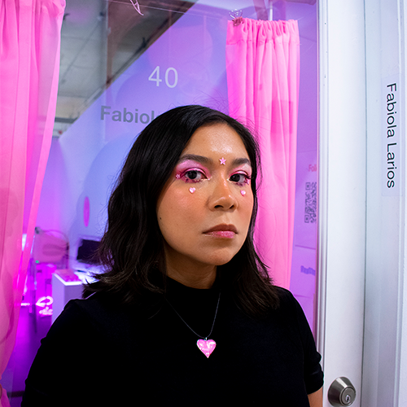

Fabiola Larios (b. 1986) is a Mexican interdisciplinary artist based in Miami, currently in residence at Bakehouse Art Complex. Her work explores the aesthetics and politics of surveillance, self-representation, and obsolescence in the digital age. Through installations that fuse e-waste, piñatas. glitter, electronics, and bedazzled surveillance cameras, Larios critiques how identity is shaped by algorithmic systems and economies of visibility.
Blending hyper-feminine visual languages with sharp commentary on internet culture, data commodification, and the environmental costs of technological excess, her installations often position viewers as both subject and observer, immersing them in environments of playful, uncanny scrutiny.
Selected group exhibitions include:
Larios was awarded the Jóvenes Creadores grant in New Technologies by Mexico’s Ministry of Culture in 2021. Got selected for NoVacancy Temporary Public Art Projects in 2025. And she is going to a residency and presenting work at NØ SCHOOL NEVERS 2026 in Nevers, France.